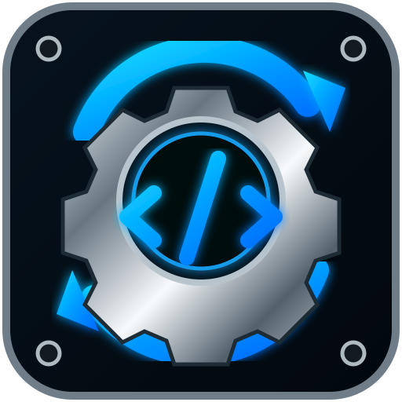

1
● Projet en attente
Projet cible
Projet Apps Script où appliquer les modifications
Projet sélectionnéNon lié
Google
Non connecté

La connexion Google n’est pas prise en charge dans certains navigateurs intégrés. Ouvre cette adresse directement dans Google Chrome, puis installe l’application.
Connecte ton compte Google, choisis le projet, colle le nouveau code et écris-le sans ouvrir l’éditeur Apps Script.
Projet Apps Script où appliquer les modifications
Choisissez une version ou collez un lien de package
Les fichiers seront écrits dans le projet sélectionné, puis déployés.
Le projet Google Cloud associé au Client ID doit avoir les API Google Apps Script et Google Drive activées. L’origine JavaScript autorisée doit contenir :
https://jprodrigue86.github.io
L’application utilise uniquement des jetons temporaires dans ton navigateur. Aucun mot de passe Google n’est enregistré.
Prêt.
Quand je te donne plusieurs codes, colle tout ici une seule fois. Tu peux aussi parcourir ton téléphone et sélectionner directement un ou plusieurs fichiers.
Fichiers acceptés : .zip, Code.gs, Selector.html, appsscript.json et fichiers .txt/.cdq. Pour un ZIP, l’application cherche automatiquement le code GS et le Selector, même dans des sous-dossiers.
Avant toute écriture, le projet est relu depuis Google et une sauvegarde complète est créée automatiquement. Les fichiers non modifiés et appsscript.json sont conservés.
Aucune modification envoyée.
Dans Google Chrome, ouvre le menu ⋮ puis choisis Installer l’application ou Ajouter à l’écran d’accueil.